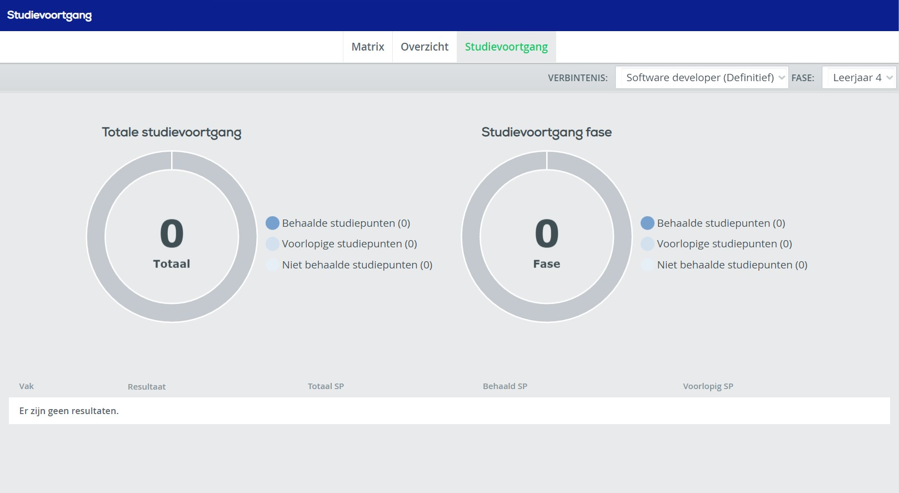

Wat is EduArte?
Zoals de meeste scholen in de 21e eeuw gebruikt ook Techniek College Rotterdam een online programma waarin leerlingen en ouders het rooster, cijfers en aanwezigheid kunnen zien.

Het rooster
EduArte wordt voornamelijk gebruikt door leerlingen om hun rooster te bekijken en door docenten om hun lesuren overzichtelijk door te geven.
- Vak
- Klas en TCR locatie
- Tijd
- Docent en welke klassen
- Extra omschrijving
- Presentie voor dat uur
Zoals u op de afbeelding kunt zien wordt er op EduArte per lesuur alle informatie gegeven die u nodig kunt hebben:
Resultaten
EduArte kan ook worden gebruikt om shoolresultaten te zien. Dit werkt alleen als docenten hier ook gebruik van maken en de cijfers erin zetten.
Tot nu hebben wij persoonlijk nog geen cijfers gekregen die hierin stonden. Onze docenten zetten cijfers vaker bij de individuele opdrachten in Team of Canvas.
br
Ondanks dat wij er geen gebruik van maken heeft EduArte hele mooie functies zoals een overzicht van behaalde studiepunten.
Zoals op de afbeelding is te zien is er een cirkel waarin je duidelijk kan zien hoeveel studiepunten wel of niet zijn behaald.
Aanwezigheid
EduArte wordt door docenten gebruikt om de aanwezigheid van leerlingen door te geven. Leerlingen kunnen hierin ook hun eigen gemelde aanwezigheid te zien.